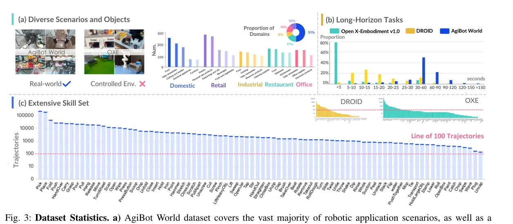
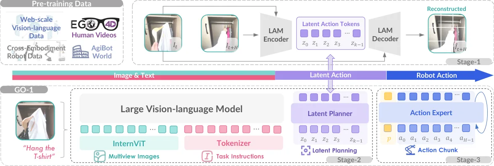

💡速记层 · 思想 / 逻辑 / 方法
默认读完就走的一层——只讲思想、逻辑、方法；效果只作验证。要核对原文/钻细节再看下面的「深读层」。
- 真实世界操作任务（双臂、灵巧手、长程、多场景）没有可用的大规模高质量数据集；现有数据碎片化、任务短、缺质控。
- 光造数据不够：VLM 的语言/视觉理解是宝贵的通用知识，但直接把 VLM token 空间对齐机器人动作空间（如 OpenVLA）开销大且效果有限。
- 关键洞察：先在"潜在动作空间"预训练——用 VQ-VAE 从帧差中学出跨本体共享的离散 token，任何视频（含人类视频）都能用，无需动作标签。
- VLM 主干在这个小得多的潜在空间里做规划（Latent Planner），降低适配代价，且能利用 Ego4D 等海量人类视频。
- 最后一级 Action Expert 用扩散目标学连续高频精控动作，与 Latent Planner 层级调制——高层规划 + 低层精控分层解耦。
GO-1 在 6 个实机任务上均值完成分 0.78，显著优于 RDT-1B(0.46)、GO-1 w/o Latent Planner(0.66)、π0。AgiBot World 预训练比 OXE 预训练提升 +0.30（in-domain）/ +0.29（OOD）。性能与数据量呈幂律扩展关系（r=0.97）。
想看具体数字（点开）
- GO-1 vs RDT-1B: Restock Bag 0.98 vs 0.84; Fold Shorts 1.00 vs 0.54; Pour Water 0.93 vs 0.83; Wipe Table 0.67 vs 0.13。
- Latent Planner 消融：有 vs 无 → "Fold Shorts" 1.00 vs 0.87，"Restock Beverage" 0.66 vs 0.60。
- 数据质量：528 条人工验证数据 vs 482 条未验证数据 → 完成分提升 0.18。
- Alpha（92k 轨迹，236h）已超过 OXE（~2000h）成功率——质量>规模。
Track A（人形/移动操作 VLA）直接命中，必读。 ViLLA 的三阶段训练（LAM→Latent Planner→Action Expert）是目前产业界最完整的"如何把 VLM 接入双臂操作"的范式——尤其 Latent Planner 层使得 VLM 可在低维潜在空间适配，而不是直接对齐高维动作 token。AgiBot World 数据集本身是当前最大规模同构实机双臂数据，开源可直接用于预训练。
Track B（足式算法）不相关——本文不涉及 locomotion。
◆核心观点 · 证据
每条 = 中文论点 + 📍页/节 + 🔤逐字原文(Ctrl-F 锚点) + 🀄译文 + 💡解读。
existing robot learning datasets remain constrained by their reliance on short-horizon tasks in highly controlled laboratory environments, failing to adequately capture the complexity and diversity inherent in real-world manipulation tasks.

The latest version contains 1,001,552 trajectories, with a total duration of 2976.4 hours, covering 217 specific tasks, 87 skills, and 106 scenes.
A distinguishing feature of the AgiBot World dataset is its emphasis on long-horizon manipulation. As shown in Fig. 3(b), prior datasets predominantly focus on tasks involving single atomic skills, with most trajectories lasting no more than 5 seconds. In contrast, AgiBot World is built upon continuous and complete tasks composed by multiple atomic skills, like "make a coffee". Trajectories in our dataset typically span approximately 30 seconds, some of which last over 2 minutes.

we propose a hierarchical Vision-Language-Latent-Action (ViLLA) framework with three training stages, as depicted in Fig. 4. Compared to Vision-Language-Action (VLA) model where action is vision-language conditioned, the ViLLA model predicts latent action tokens, conditioned on the generation of subsequent robot control actions.

To broaden the data pool by incorporating internet-scale human videos lacking action labels and cross-embodiment robot data, we employ latent actions in Stage 1 to model the inverse dynamics of consecutive frames. This approach enables the transfer of real-world dynamics from heterogeneous data sources into universal manipulation knowledge.
The latent action tokens are quantized using a VQ-VAE objective, with a codebook of size |C|.
We use InternVL2.5-2B as the VLM backbone due to its strong transfer learning capabilities. The two-billion parameter scale has proven effective for robotic tasks in our preliminary experiments, as well as in prior studies. Multiview image observations are first encoded using InternViT before being projected into the language space. The latent planner consists of 24 transformer layers, which enable layer-by-layer conditioning from the VLM backbone with full bidirectional attention.
Although the action expert shares the same architectural framework as the latent planner, their objectives diverge: the latent planner generates discretized latent action tokens through masked language modeling, while the action expert regresses low-level actions via an iterative denoising process. Both expert modules are conditioned hierarchically on preceding modules, including the action expert itself, ensuring coherent integration and information flow within the dual-expert system.
Notably, the AgiBot World alpha dataset, despite having a significantly smaller data volume than OXE (e.g., 236h compared to ∼2000h), achieves a higher success rate, underscoring the exceptional data quality of our dataset.
being larger in quantity does not necessarily translate to improved performance, while a smaller set of human-verified data yields a 0.18 boost in the completion score, underscoring the importance of high-quality data for policy learning.
the policy's performance exhibits a predictable power-law scaling relationship with the number of trajectories, supported by a Pearson correlation coefficient of r = 0.97.
GO-1 significantly outperforms RDT and π0, particularly in tasks such as "Pour Water", which demands robustness to object positions, and "Restock Beverage", which highlights instruction-following capabilities. The inclusion of the latent planner yields an average improvement of 0.12 task completion score.
⎘开源状态 · 实时核查结果（2025-09）
以下为实时检索 GitHub/HuggingFace 所得，非依赖 PDF 中的声明。
- 数据集
- 已开源 Alpha（92,214 轨迹，Jan 2025）+ Beta（1,003,672 轨迹，Mar 2025） · HF: AgiBotWorld-Alpha · HF: AgiBotWorld-Beta · Challenge 数据集亦开放
- 模型权重
- 已开源 GO-1（完整带 Latent Planner，Sept 19 2025） + GO-1 Air（无 Latent Planner，轻量版，Sept 19 2025） · HuggingFace: agibot-world
- 代码
- 已开源 训练/推理/微调脚本 + 数据集工具链 + 部署代码 · github.com/OpenDriveLab/AgiBot-World · 含 LIBERO 微调示例、AgileX/RoboTwin 集成
- 许可证
- 非商用 CC BY-NC-SA 4.0——可学术使用，商业用途需额外授权
- 荣誉
- 获奖 IROS 2025 Best Paper Award Finalist · IEEE TRO 2026
The dataset is available under the CC BY-NC-SA 4.0 license, along with the model checkpoints and code.
⚖批判 · 评级
产业界最完整的双臂操作全栈开源生态：百万级同构数据 + 完整工具链 + 权重全部开源（CC BY-NC-SA）。ViLLA 的"潜在动作作为 VLM 适配桥"思路优雅：不直接对齐高维动作空间、不需要动作标签就能利用人类视频，且三阶段训练清晰可复现。幂律扩展 r=0.97 有说服力。数据质量 > 数据数量（Alpha 236h > OXE 2000h）的消融是重要实践结论。
① 评测规模有限：仅 6 个任务，每任务 30 次（10 seen + 20 distractor），标准为 normalized score 而非二元成功率，失败模式分析缺失。
② 仅实机评测，无模拟环境：论文自承"目前正在开发模拟环境"——可重复评测受限，论文发布时（v1，Mar 2025）尤为明显。
③ Latent Planner 的 codebook 超参未充分消融：|C| 大小、k=4 token 数等关键超参未有系统性实验。
④ 与 π0/π0.5 的对比不完整：仅在 IROS 版（v4，Jul 2025）补充了与 π0 的比较，原版无此对比。
⑤ LAM 的 Ego4D 使用细节模糊：具体数据比例、是否所有 Ego4D 视频都参与训练未明确说明。
评级：Important ViLLA 的三阶段训练框架和 AgiBot World 数据集是双臂操作领域的重要里程碑——特别是对于希望基于真实大规模数据训练通用操作策略的团队，这是当前最值得参考的完整开源生态。但核心方法创新（潜在动作）在 LAPA 等工作中已有先例，GO-1 的贡献主要在工程集成和数据规模，而非从零开始的方法突破。